A step-by-step course in running a monthly VAT and withholding tax inspection exercise with Inspection Ready — written the way an experienced tax instructor would teach it to a new team.
دليل عملي خطوة بخطوة لإعداد تمرين الجاهزية الشهري لفحص ضريبة القيمة المضافة وضريبة الاستقطاع
Think of this as a workshop, not a manual. Each chapter tells you what to click, then explains why an inspector cares — because once you see the file through the inspector's eyes, the screens explain themselves.
Every step uses four kinds of note:
What ZATCA compares, and what happens when the figures disagree.
What experienced reviewers do that new preparers miss.
The errors that turn a clean month into a finding.
The legal figure the system applies, with its source.
The screenshots come from the built-in demo company, Al Noor Trading Co., whose September 2026 data has deliberate problems planted in it. Load it yourself (Dashboard → Load demo company) and follow along: finding the planted problems is the best practice you can get.
Two ideas carry the whole system: the inspector compares the same numbers from different sources, and VAT and withholding tax are inspected as separate files.
An inspector does not start by reading your invoices. They start by asking whether your numbers agree with each other — and with numbers ZATCA already has.
For any month, ZATCA can see your filed return, every e-invoice reported through Fatoora, your customs declarations, payments you made through SADAD, and — when they ask — your bank statements. Your own file holds the ERP tax report, the Excel workings used to prepare the return, the trial balance and the general ledger. The inspection is the comparison of the first set with the second.
| Source | Who holds it | What the inspector looks for |
|---|---|---|
| VAT return | ZATCA | The 16 boxes as filed — the anchor everything is compared with. |
| ERP tax report | You | The invoice listing the return should have come from. |
| Excel workings | You | The bridge between ERP and return; manual adjustments live here. |
| Trial balance / GL | You | Revenue and VAT accounts — they must tell the same story. |
| Fatoora data | ZATCA | Every invoice your e-invoicing provider reported or cleared. |
| Bank statements | Your bank | Money received that is not in sales is the classic assessment. |
Disagreement between sources is cheap for ZATCA to find and expensive for you to explain a year later. A difference you explained in writing in the month it happened is a note in a file; the same difference found by an inspector is an assessment plus a 50% error penalty.
Inspection Ready runs these comparisons for you every month, as numbered checks. Each check shows its two figures (A and B), the difference, and a status:
| Mark | Meaning | What you do |
|---|---|---|
| ✓ Passed | The sources agree within tolerance. | Nothing. |
| ! Needs explanation | A difference exists but may be legitimate (timing, rounding, a known item). | Write the explanation in the box under the check. |
| ✕ Failed | A difference that would likely become a finding. | Correct it, or raise a finding with an owner and a date. |
| – No data | The source is not loaded yet. | Load it on the Data tab. |
VAT and withholding tax are different taxes, filed on different returns, often by different people. The system keeps them apart.
The switch at the top of every screen — VAT | Withholding tax — changes the whole application: dashboard, exercise tabs, samples, documents, findings, report pack and the reports centre. VAT screens use teal; withholding tax screens use blue, so you always know which file you are in. Switching keeps your place: if you are in an exercise, you land on the same exercise in the other section.
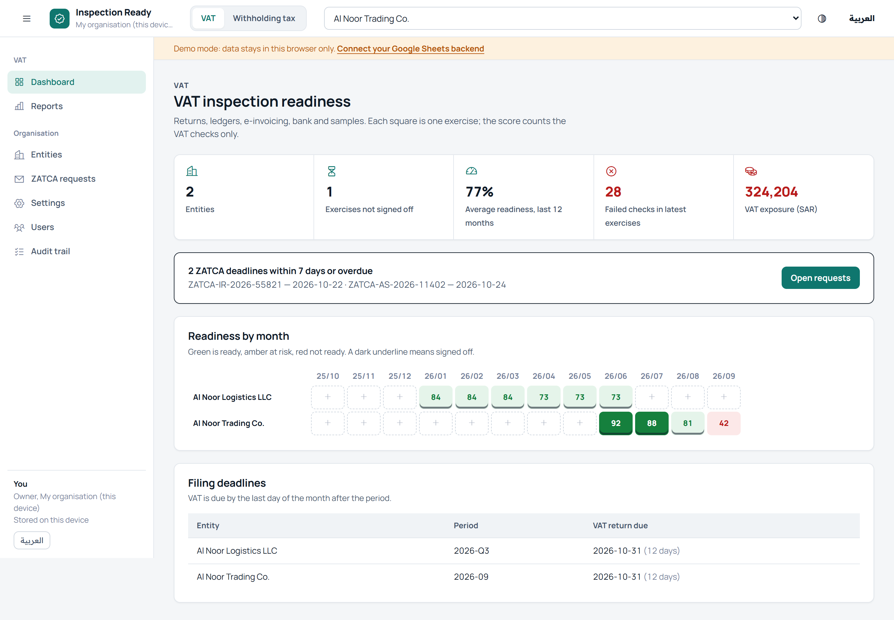
Each section has its own score out of 100, weighted from everything in that section's file: reconciliation checks, bank, e-invoicing, filing, analytics, sample testing, documents on file and open findings. The grades are:
Ready · 85+ Mostly ready · 70–84 At risk · 50–69 Not ready · below 50
Do not chase the score; chase the exposure figure next to it. A month at 82% with SAR 300,000 of quantified exposure is in worse shape than a month at 70% with none. The score tells you how complete your file is; exposure tells you how much tax is at stake if an inspector arrived today.
Half an hour of setup decides whether every later check is meaningful. Do it carefully, with your tax manager in the room.
Open the site and choose Create an organisation. Enter your company name, your name, your work email and a password. The system creates a private Google Sheet for your organisation — one tab per table — and shares it with you. Everything you load, every sample and finding, is stored there.
The site connects to its backend automatically — there is nothing to configure. Leave Keep me signed in on this device ticked on your own computer and the site opens straight into your dashboard for 30 days; untick it on a shared computer. The Google Sheet button in the top bar opens your organisation's sheet directly.
| Role | Can do |
|---|---|
| Owner | Everything, including users, deleting entities and the Google Sheet. |
| Manager | Settings, audit trail, entity edits and sign-off. |
| Preparer | Start exercises, load data, test samples, raise findings. |
| Viewer | Read only — useful for auditors and the CFO. |
You can also limit a user to specific entities, so a branch accountant sees only their branch.
Use the Sign out button at the right end of the top bar (on a phone it shows as an arrow icon). It is also at the bottom of the left sidebar, under your name. Always sign out on a shared computer: your session otherwise stays valid in that browser.
Sharing one login across the team. The audit trail then shows one person doing everything, and sign-off loses its meaning. Give each person their own user and role.
Settings hold the rates, tolerances and legal thresholds every check uses. The defaults are the current rules; change them only with a reason you can write down.
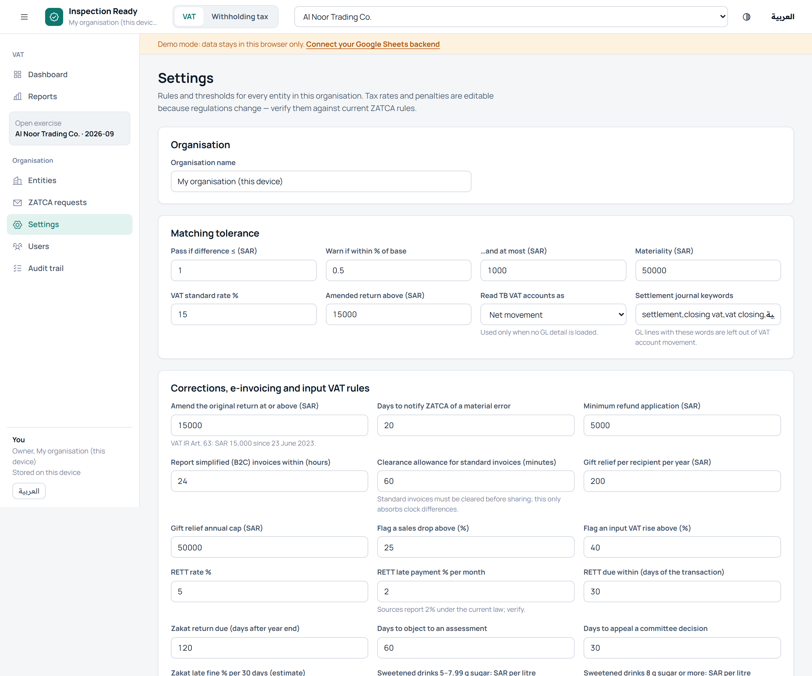
Record why you changed any default in the audit trail note. When an external auditor asks "why was tolerance SAR 50 in March?", the answer should be in the system, not in someone's memory.
Add every company or branch that files its own VAT return. The entity holds what the checks need to know about it.
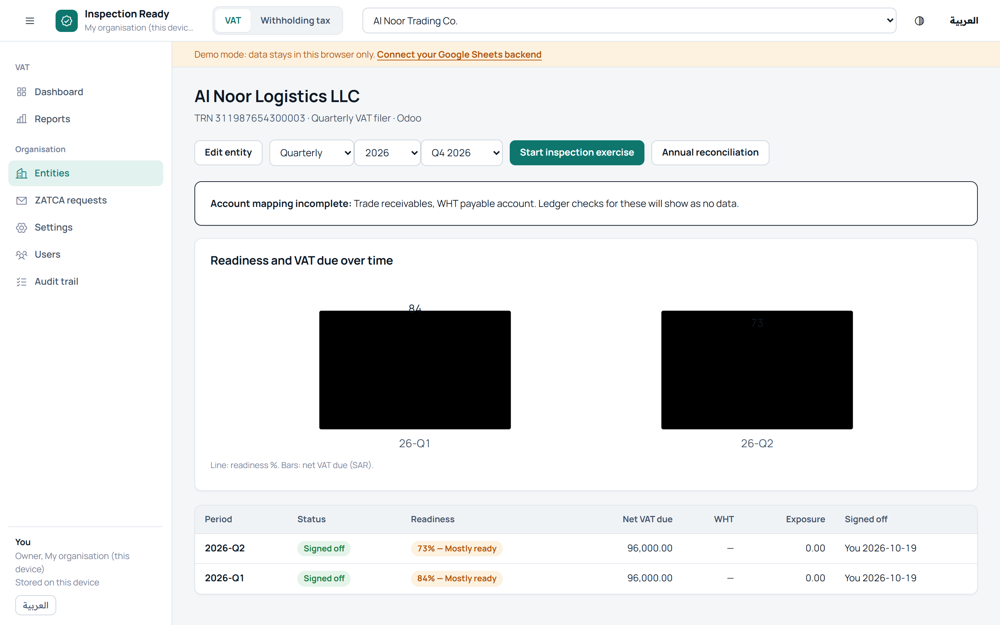
Mapping only the VAT payable account. Map all VAT accounts (output, input, reverse charge, payable). Check V7 compares box 16 with the net of all of them, which works whether or not you post a settlement journal.
Twelve steps, in the order an experienced reviewer works. Most months take two to four hours once the data exports are routine.
From the dashboard, click the empty square for the entity and month, or use Start inspection exercise on the entity page. The overview is your cockpit: the readiness ring and its parts on the left, What needs attention on the right (failures first, largest differences first), and the Five sources, one picture table at the bottom.
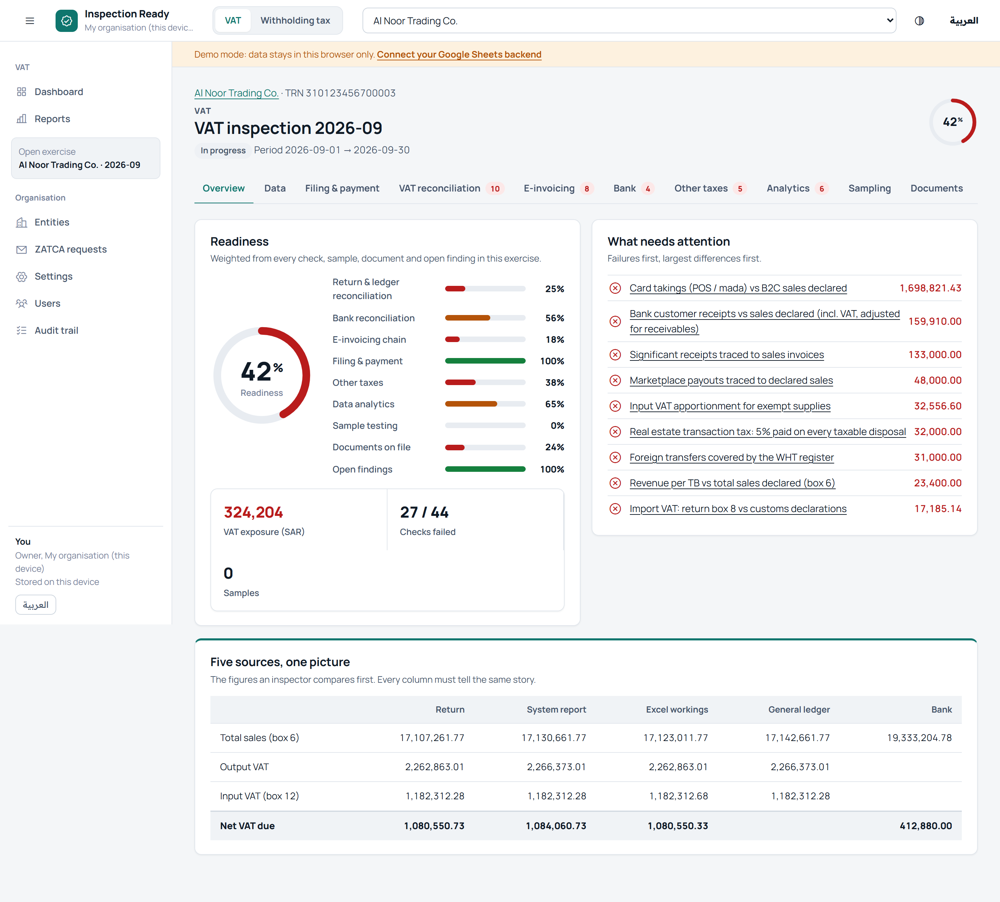
Read the five-sources table before anything else. If total sales differ between return, system report, Excel and ledger, the box-level checks will all inherit that difference; find its cause once, at the top.
On the Data tab, first copy the 16 boxes of the return exactly as filed on the ZATCA portal (or import them from Excel, or prefill from the system report if the return was filed from it). Then upload each source. Columns are matched automatically from English or Arabic headers; check the mapping preview before saving. Several files of the same kind add up — load one statement per bank account.
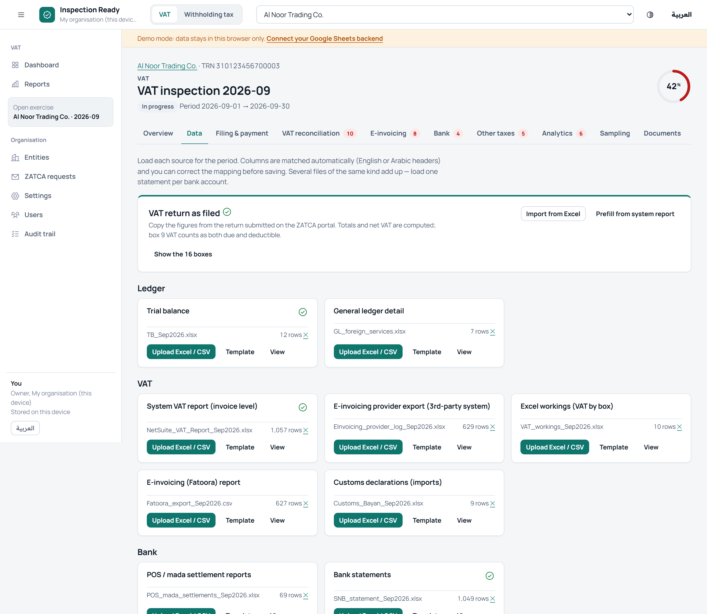
| Source | Export from | Feeds |
|---|---|---|
| Trial balance, GL | ERP, period close | V4–V7, revenue tie-out |
| System VAT report | ERP tax report, invoice level | Box-by-box, analytics, sampling |
| Excel workings | Your return file | Box-by-box three-way |
| Provider log, Fatoora export | E-invoicing provider; Fatoora portal | E1–E11 |
| Bank statements | Every account, full month | B1–B7, POS / mada |
| Customs (Bayan) | Customs broker / FASAH | Import VAT, box 8 |
Loading a summary instead of the invoice-level report. Analytics, duplicate detection and sampling all need one row per invoice.
Record when the return was filed and paid, the amount and the SADAD reference. Check C1 tests filing on time, C2 payment on time and in full.
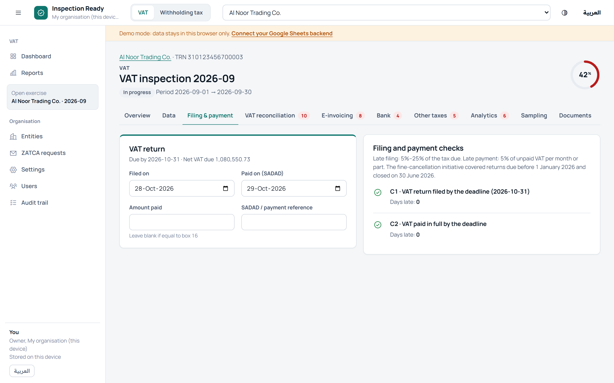
A VAT return is due by the last day of the month after the period. Late filing: 5% to 25% of the tax due. Late payment: 5% of the unpaid tax for each month or part of a month. The fine-cancellation initiative covered returns due before 1 January 2026 and closed on 30 June 2026 — it no longer protects new delays.
This tab compares return, system report and Excel workings for every box, then runs the ledger checks. Red cells are differences beyond tolerance. Under each failing or warning check there is a box for your explanation — write it as if the inspector will read it, because they will: it prints in the report pack.
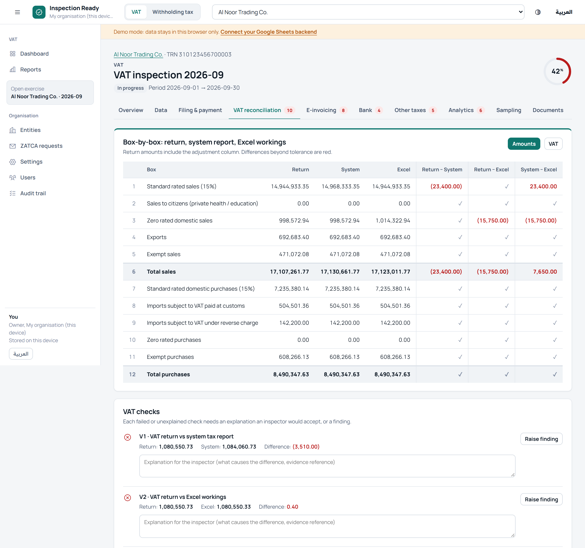
Reverse-charge VAT (box 9) is declared as output tax and recovered as input tax: box 13 = box 6 VAT + box 9 VAT − box 12 VAT. A missing box 9 is a finding even though the net effect is nil.
Your ERP issues the invoice, your e-invoicing provider signs it and sends it to Fatoora, ZATCA clears it (standard B2B) or records it (simplified B2C). An invoice missing anywhere along this chain is a finding. The tab counts each link and lists the breaks.
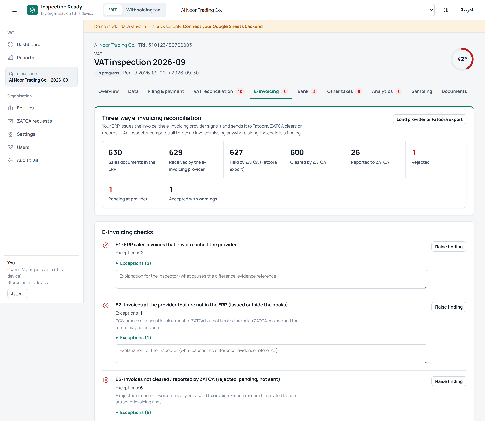
The provider is the hub. If you have a provider log, the checks use it; if not, they fall back to the Fatoora export. Ask your provider for a monthly status export — it is the single most useful file in this tab.
Each bank line is classified automatically — customer receipt, supplier payment, ZATCA VAT, ZATCA WHT, Zakat, foreign transfer, payroll, internal transfer, financing. Reclassify any line with the drop-down; checks update immediately.
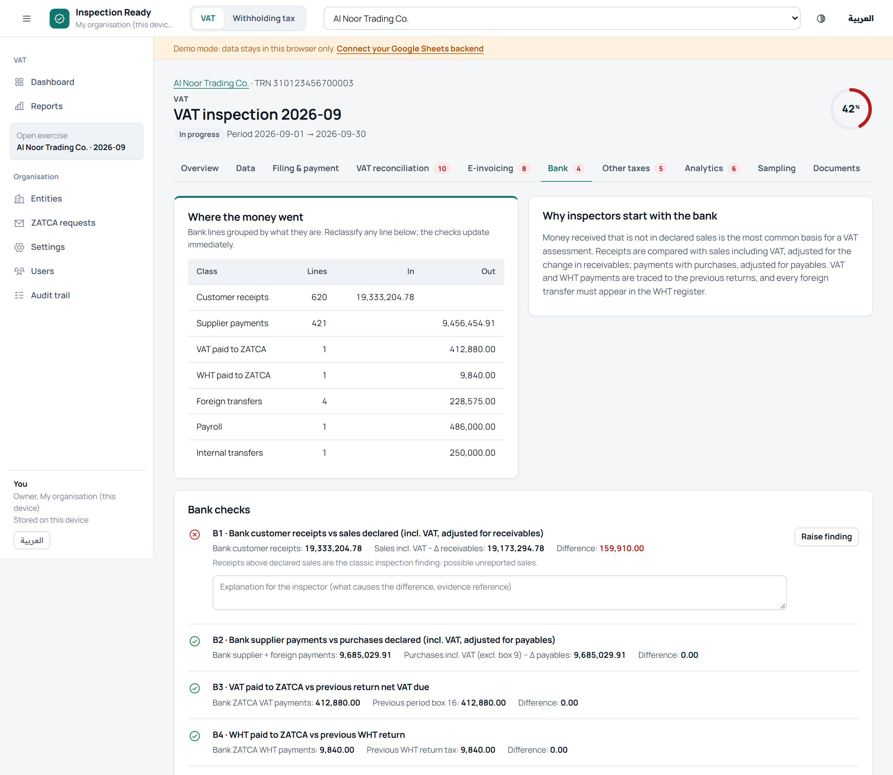
Unexplained receipts are the most common basis for a VAT assessment. A finding raised from a bank check takes the VAT fraction of the difference — r ÷ (1 + r), 15/115 — because bank amounts include VAT.
Load only what applies. Marketplace payouts are detected in the bank automatically; if you operate a platform, answer the six deemed-supplier questions. Real estate disposals are tested for the 5% RETT, excise goods for the declared excise.
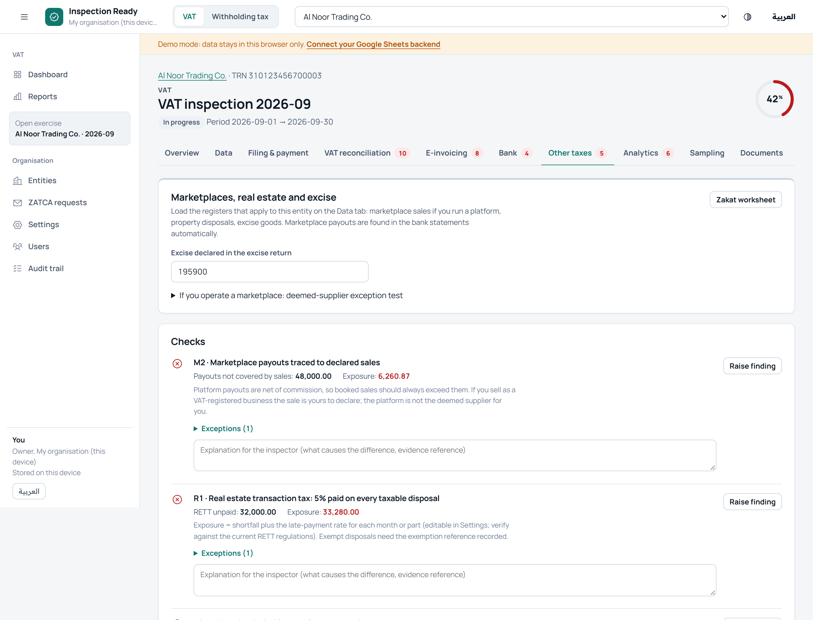
From 1 January 2026 a platform is the deemed supplier for sales by unregistered residents (non-resident e-services since 18 April 2025), unless all six exception conditions hold. RETT is 5% of the value, due within 30 days. Sweetened drinks are taxed per litre from 1 January 2026 by sugar content.
The analytics tab runs eighteen tests over every invoice: duplicates (including against prior months), round amounts, weekend and holiday invoices, invalid VAT numbers, zero-rating without evidence, Benford's law on first digits, VAT rate errors and more. A test that finds items gives you Raise finding and feeds the risk-based sample.
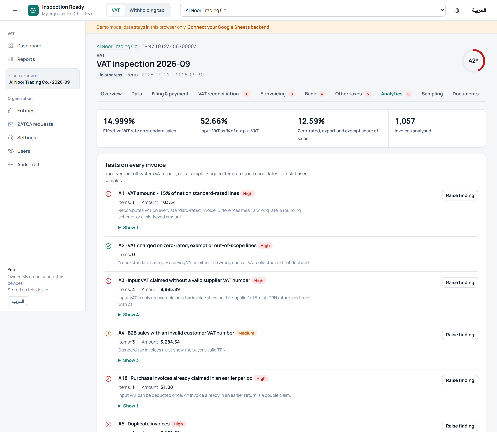
Reconciliation proves totals; samples prove the invoices behind them. Select one sample of sales and one of purchases each month.
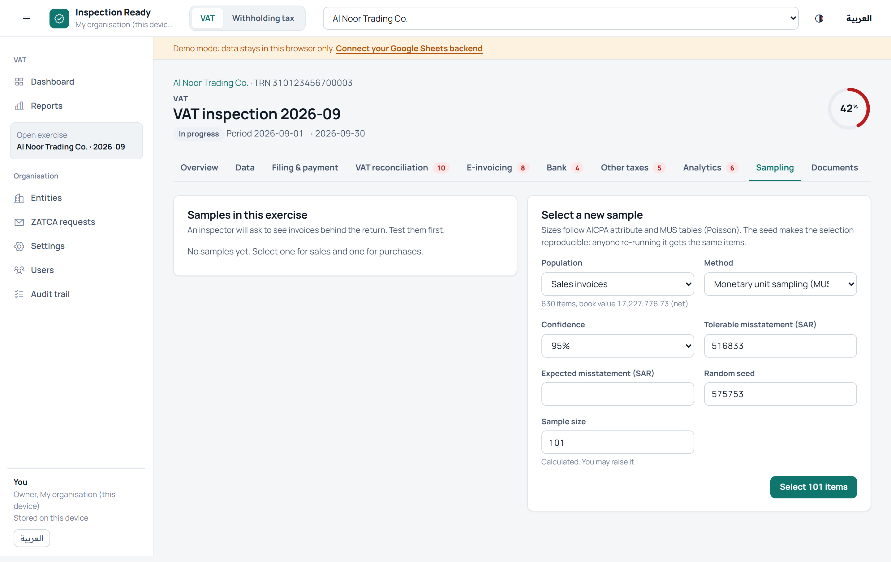
Paste the Drive link to each invoice into the evidence column. On inspection day you open the sample and show the documents in seconds — that alone changes the tone of the meeting.
The checklist lists what inspectors typically request — registration certificate, returns and payment receipts, the tax report, contracts for zero-rated supplies, export evidence, customs declarations, e-invoicing integration evidence. Mark each on file, requested or missing, name an owner and link it.
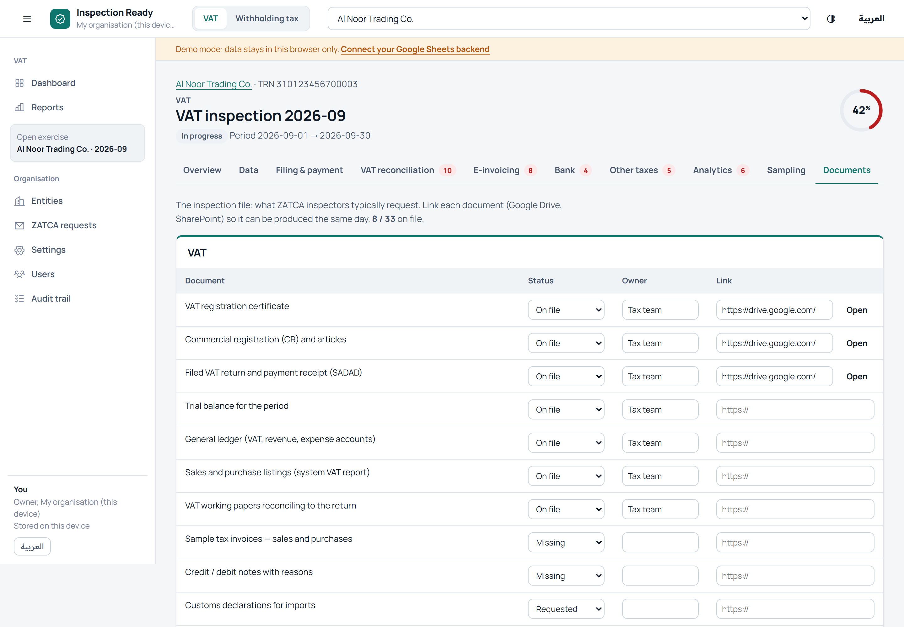
Raise a finding from any failed check: the title, the check and the tax at stake are filled in for you. Add the root cause, corrective action, owner and due date. The penalty estimate and the correction route are suggested from the settings.
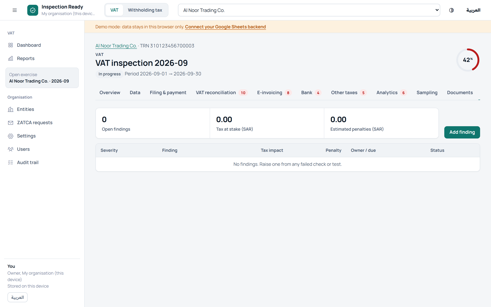
If the error changes the tax by SAR 15,000 or more, notify ZATCA and amend the original return within 20 days of discovering it. Below SAR 15,000, correct it in the return for the period of discovery. Over-declarations can be corrected for 5 years. Record the discovery date on the finding: the corrections register counts the 20 days from it.
The report tab assembles the VAT inspection readiness pack: cover with the score, the return as filed, every check with its explanation, analytics exceptions, samples, findings and the document list, with signature blocks. Print it to PDF or export the VAT workbook to Excel.
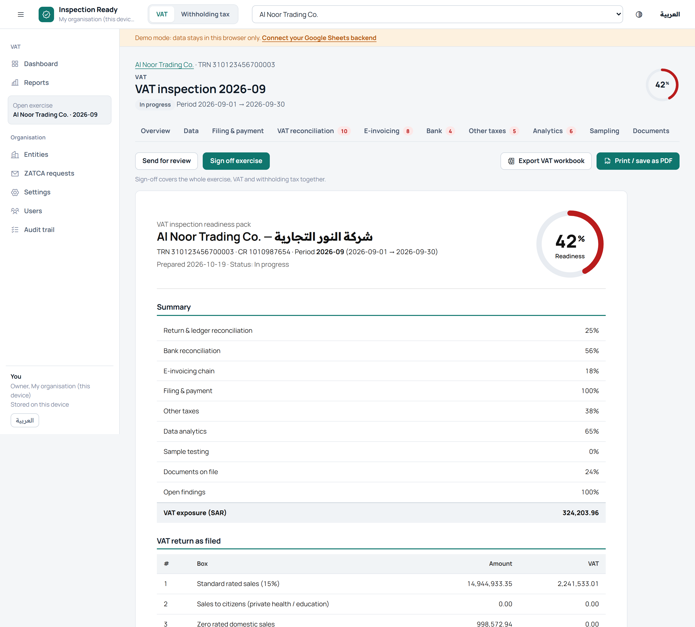
When the preparer is done, Send for review. A manager reviews and clicks Sign off exercise; the exercise becomes read-only until a manager reopens it. Sign-off covers the whole exercise — VAT and withholding tax together — so sign off once both sections are complete.
Signing off with failed checks that have no explanation and no finding. Every red mark must end the month either explained or owned.
Switch to Withholding tax in the top bar. The same exercise, seen only through WHT: payments to non-residents, the WHT return, certificates and the bank trace.
The WHT dashboard shows only entities registered for withholding tax, with their WHT score per month and the WHT return deadline — the 10th of the following month.
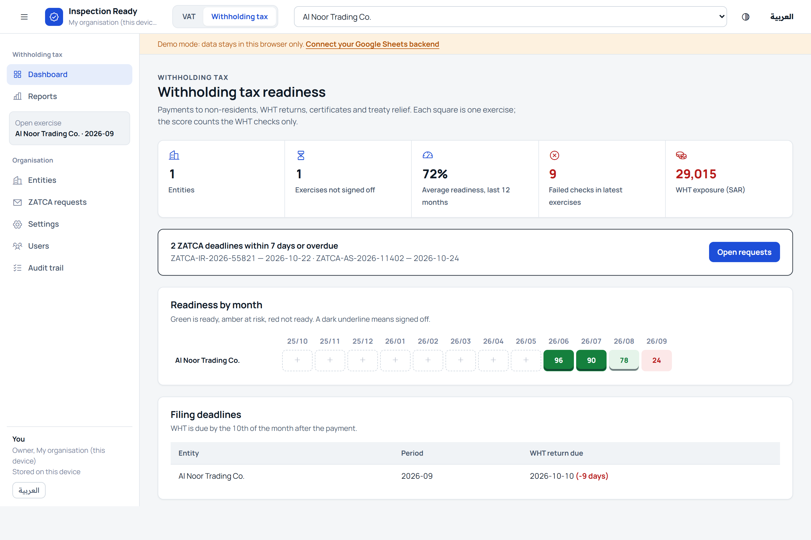
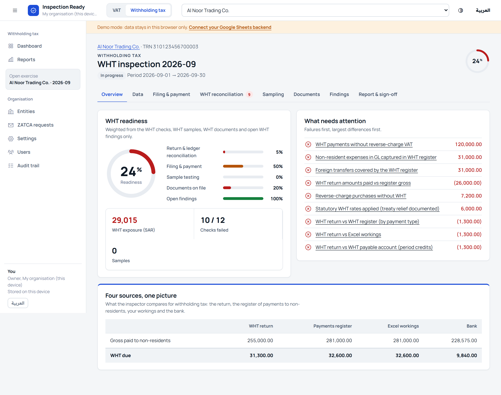
On the WHT Data tab load the payments register (one line per payment: date, beneficiary, country, payment type, gross, rate, WHT, treaty, certificate number, date paid to ZATCA), the WHT return as filed and your WHT workings. The trial balance, GL and bank loaded in the VAT section are shared.
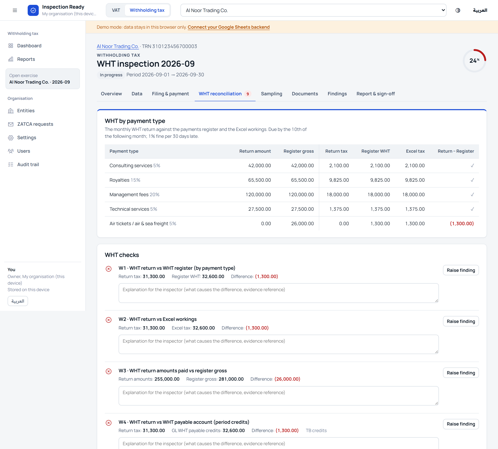
The payer is liable for WHT not withheld. Inspectors start from foreign transfers in the bank and from GL accounts like consultancy, royalties and management fees, and ask for the register line behind each one.
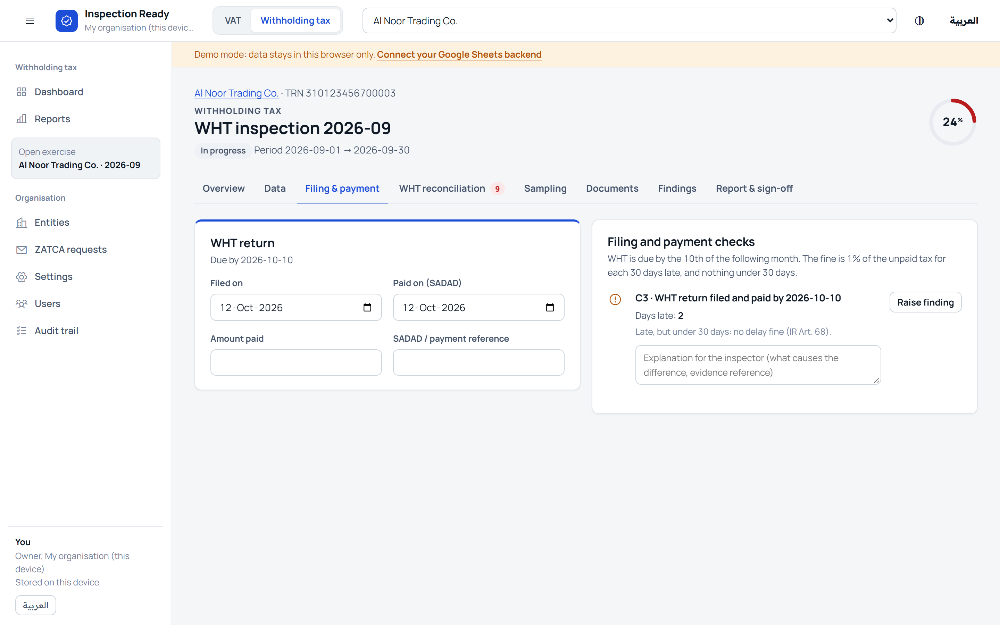
WHT is due by the 10th day of the month following payment. The delay fine is 1% of the unpaid tax for each 30 days of delay; a delay under 30 days carries no fine.
In the WHT section the sampling tab offers WHT payments only. Test: beneficiary is a non-resident without a permanent establishment, payment type and rate correct, treaty relief supported, WHT paid on time, certificate issued.
The WHT documents list holds contracts with non-residents, residency certificates for treaty relief, WHT certificates issued and payment receipts. Findings raised in this section are tagged WHT and appear only in WHT reports.
The report tab produces the Withholding tax inspection readiness pack — WHT return by payment type, WHT checks, filing, bank trace, WHT samples, WHT findings and documents — and a WHT-only Excel workbook.
Give the WHT pack to whoever handles treasury payments abroad. They see in one page which transfers lacked a register line or a certificate, and they fix the process, not just the month.
Reports across entities and dates, ZATCA's letters and their deadlines, and the annual cross-checks against the financial statements and Zakat.
Each section has its own reports. Pick any range of months since 2018 — or a quick range — and every report follows it. Each exports to Excel.
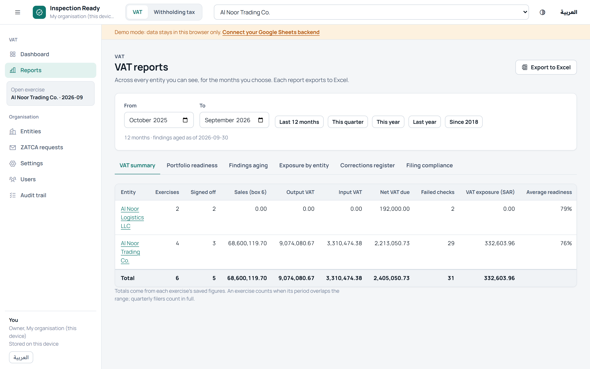
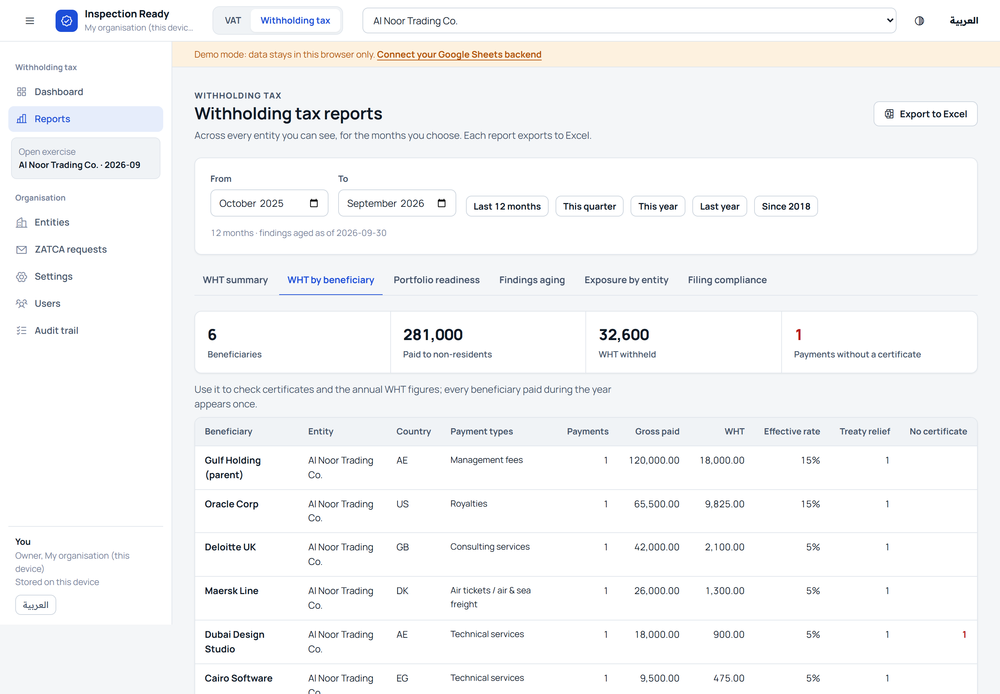
Run the corrections register every week. It lists every VAT finding with a tax impact, whether it needs an amended return or the next return, and the days left before the 20-day limit.
Record every letter from ZATCA on ZATCA requests: information requests and field visits with the deadline ZATCA gave, assessments (60 days to object) and committee decisions (30 days to appeal) with the deadline computed for you. Deadlines within 7 days appear as an alert on the dashboard.
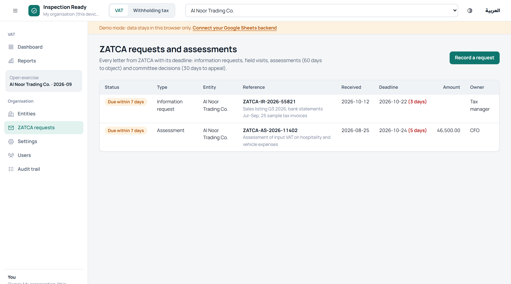
The annual reconciliation (from the entity page) puts a year of VAT returns against the audited financial statements and the Zakat or income tax return, with a Zakat worksheet prefilled from the trial balance.
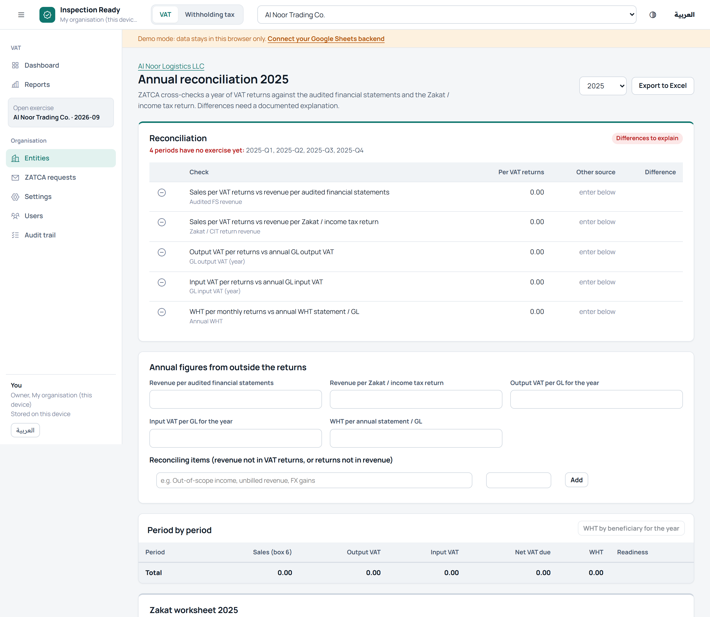
The habits that make a team permanently inspection-ready, and the rules in one place.
| When | VAT | Withholding tax |
|---|---|---|
| Days 1–5 | Close the month; export TB, GL, tax report, provider log, bank. | Complete the payments register for last month's foreign payments. |
| Days 5–9 | — | Run the WHT exercise; file and pay by the 10th; issue certificates. |
| Days 10–20 | Run the VAT exercise: steps 1–8 before filing. | Sign off the WHT section. |
| Before month end | File and pay by the last day; finish samples and documents; sign off. | — |
| Every week | Corrections register and ZATCA requests. | |
Every one of these is a check in the system. A month in which none of them is red is a month you can defend.
| Rule | Figure the system applies |
|---|---|
| VAT rate | 15% |
| VAT return due | Last day of the month after the period |
| Late filing / late payment | 5–25% of tax due / 5% per month or part |
| Error penalty | 50% of the difference (settings) |
| Correction threshold | SAR 15,000 — amend within 20 days (VAT IR Art. 63, since 23 June 2023) |
| Over-declaration correction | Within 5 years |
| Refund minimum | SAR 5,000 |
| WHT due | 10th of the following month |
| WHT delay fine | 1% per 30 days; none under 30 days (Income Tax IR Art. 68(2)) |
| Fine-cancellation initiative | Returns due before 1 Jan 2026; closed 30 June 2026 |
| Marketplace deemed supplier | Non-resident e-services from 18 Apr 2025; unregistered residents from 1 Jan 2026 |
| RETT | 5%, due within 30 days |
| Excise | 100% tobacco, energy drinks, e-cigarettes; sweetened drinks per litre from 1 Jan 2026 |
| Zakat | 2.5% (Hijri year), base not below adjusted net profit; due 120 days after year end |
| Objection / appeal | 60 days from assessment / 30 days from committee decision |
The figures above were checked against published sources on 19 October 2026. A few rely on a single source (the RETT late rate, the Zakat late fine, the marketplace payment-collection condition) — confirm them with your tax adviser. Every rate and threshold can be changed in Settings if the rules change.
Switch language from the top bar or the sidebar footer; layout, numbers and dates follow. Amounts stay in Latin digits with parentheses for negatives, as Saudi financial statements print them.
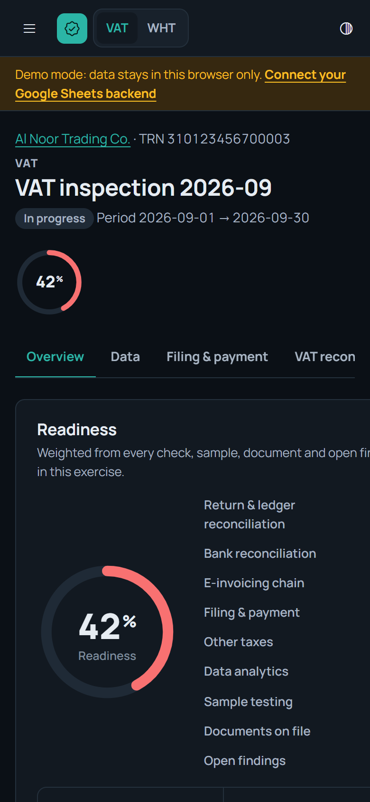
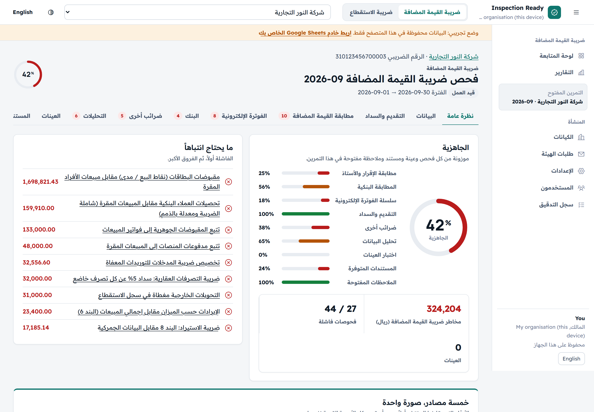
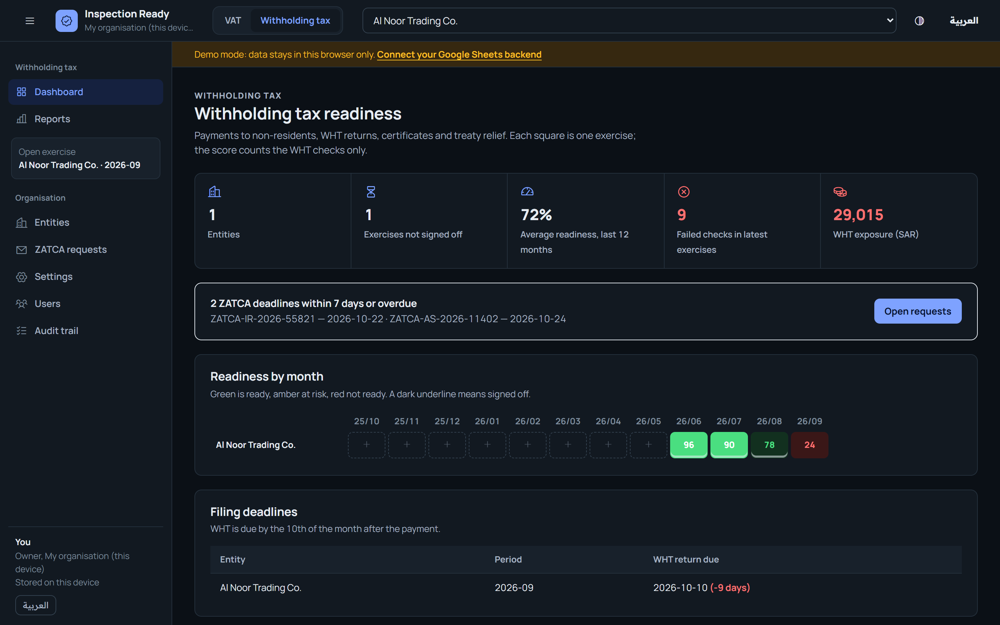